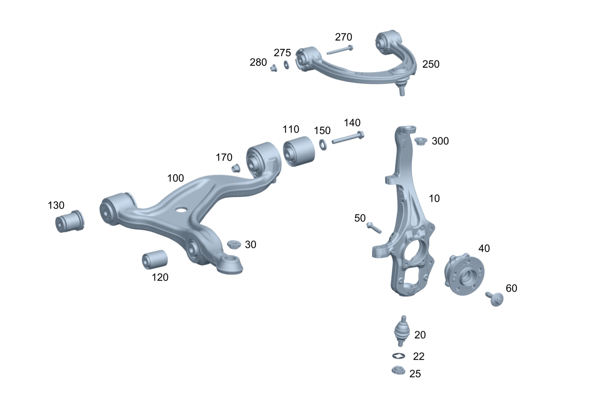

| № | Артикул | Название | Кол. | Примечание | Ограничение |
|---|---|---|---|---|---|
| 10 | A 167 332 35 00 | Поворотный кулак (ACHSSCHENKEL) | 1 | Передн. лев. | M177+M40+-(M014/M036)/(FC/FV)+(809/800/801/802/803+-053)+M177+M40+M014/FX+(809/800/801/802/803)+M177+M40+M014/M256+M30+M016 |
| 10 | A 167 332 27 00 | Поворотный кулак (ACHSSCHENKEL) | 1 | Передн. лев. | 490+-(M177+M40+M036) |
| 10 | A 167 332 28 00 | Поворотный кулак (ACHSSCHENKEL) | 1 | Передн. прав. | 490+-(M177+M40+M036) |
| 10 | A 167 332 36 00 | Поворотный кулак (ACHSSCHENKEL) | 1 | Передн. прав. | M177+M40+-(M014/M036)/(FC/FV)+(809/800/801/802/803+-053)+M177+M40+M014/FX+(809/800/801/802/803)+M177+M40+M014/M256+M30+M016 |
| 20 | A 167 330 63 00 | Опорный шарнир (TRAGGELENK) | 1 | Поворотный кулак левый | |
| 20 | A 167 330 63 00 | Опорный шарнир (TRAGGELENK) | 1 | Поворотный кулак правый | |
| 22 | A 000 994 79 10 | - Стопорная шайба (SICHERUNGSSCHEIBE) | 1 | Поворотный кулак левый | |
| 22 | A 000 994 79 10 | - Стопорная шайба (SICHERUNGSSCHEIBE) | 1 | Поворотный кулак правый | |
| 25 | A 002 990 71 54 | Гайка 12-гран. с фланцем (12-KANTMUTTER MIT FLANSCH) | 1 | Опорный шарнир к поворотному кулаку слева | |
| 25 | A 002 990 71 54 | Гайка 12-гран. с фланцем (12-KANTMUTTER MIT FLANSCH) | 1 | Опорный шарнир к поворотному кулаку справа | |
| 30 | A 002 990 71 54 | Гайка 12-гран. с фланцем (12-KANTMUTTER MIT FLANSCH) | 1 | Нижний шаровой шарнир к нижнему левому поперечному рычагу | |
| 30 | A 002 990 71 54 | Гайка 12-гран. с фланцем (12-KANTMUTTER MIT FLANSCH) | 1 | Нижний шаровой шарнир к нижнему правому поперечному рычагу | |
| 40 | A 167 334 03 00 | Подш. ступицы вед. колеса (RADLAGER, ANGETRIEBEN) | 1 | Слева с фланцем колеса | (809/800/801/802/803/804/805/806)+-M007 |
| 40 | A 167 334 06 00 | Подш. ступицы вед. колеса | 1 | Слева с фланцем колеса | (807/808)+-M007 |
| 40 | A 167 334 03 00 | Подш. ступицы вед. колеса (RADLAGER, ANGETRIEBEN) | 1 | Справа с фланцем колеса | (809/800/801/802/803/804/805/806)+-M007 |
| 40 | A 167 334 06 00 | Подш. ступицы вед. колеса | 1 | Справа с фланцем колеса | (807/808)+-M007 |
| 50 | A 002 990 65 03 | Винт Torx External (SCHRAUBE MIT SECHSRUND) | 4 | Подшипник ступицы колеса к поворотному кулаку слева; M12X57,5 | |
| 50 | A 002 990 65 03 | Винт Torx External (SCHRAUBE MIT SECHSRUND) | 4 | Подшипник ступицы колеса к поворотному кулаку справа; M12X57,5 | |
| 60 | A 000 990 75 06 | Винт Torx External (SCHRAUBE MIT SECHSRUND) | 1 | Приводной вал к ступице переднего колеса, слева; M16X1.5X60 | -M007 |
| 60 | A 000 990 75 06 | Винт Torx External (SCHRAUBE MIT SECHSRUND) | 1 | Приводной вал к ступице переднего колеса, справа; M16X1.5X60 | -M007 |
| 100 | A 167 330 83 01 | Поперечный рычаг (QUERLENKER) | 1 | Снизу слева | M177+M40+-(M014/M036)/(FC/FV)+(809/800/801/802/803+-053)+M177+M40+M014/FX+(809/800/801/802/803)+M177+M40+M014/M256+M30+M016 |
| 100 | A 167 330 93 01 | Поперечный рычаг (QUERLENKER) | 1 | Снизу слева | M177+M40+-(M014/M036)/(FC/FV)+(809/800/801/802/803+-053)+M177+M40+M014/FX+(809/800/801/802/803)+M177+M40+M014/M256+M30+M016 |
| 100 | A 167 330 84 01 | Поперечный рычаг (QUERLENKER) | 1 | Снизу справа | M177+M40+-(M014/M036)/(FC/FV)+(809/800/801/802/803+-053)+M177+M40+M014/FX+(809/800/801/802/803)+M177+M40+M014/M256+M30+M016 |
| 100 | A 167 330 94 01 | Поперечный рычаг (QUERLENKER) | 1 | Снизу справа | M177+M40+-(M014/M036)/(FC/FV)+(809/800/801/802/803+-053)+M177+M40+M014/FX+(809/800/801/802/803)+M177+M40+M014/M256+M30+M016 |
| 110 | A 167 333 46 00 | - Опора поперечного рычага (QUERLENKERLAGER) | 1 | Поперечный рычаг слева | M177+M40+-(M014/M036)/(FC/FV)+(809/800/801/802/803+-053)+M177+M40+M014/FX+(809/800/801/802/803)+M177+M40+M014/M256+M30+M016 |
| 110 | A 167 333 46 00 | - Опора поперечного рычага (QUERLENKERLAGER) | 1 | Поперечный рычаг справа | M177+M40+-(M014/M036)/(FC/FV)+(809/800/801/802/803+-053)+M177+M40+M014/FX+(809/800/801/802/803)+M177+M40+M014/M256+M30+M016 |
| 120 | A 167 333 15 00 | - Эластомерная опора (ELASTOMERLAGER) | 1 | Поперечный рычаг слева | |
| 120 | A 167 333 15 00 | - Эластомерная опора (ELASTOMERLAGER) | 1 | Поперечный рычаг справа | |
| 130 | A 167 333 45 00 | - Опора поперечного рычага (QUERLENKERLAGER) | 1 | Поперечный рычаг слева | M177+M40+-(M014/M036)/(FC/FV)+(809/800/801/802/803+-053)+M177+M40+M014/FX+(809/800/801/802/803)+M177+M40+M014/M256+M30+M016 |
| 130 | A 167 333 45 00 | - Опора поперечного рычага (QUERLENKERLAGER) | 1 | Поперечный рычаг справа | M177+M40+-(M014/M036)/(FC/FV)+(809/800/801/802/803+-053)+M177+M40+M014/FX+(809/800/801/802/803)+M177+M40+M014/M256+M30+M016 |
| 140 | N 910105 014020 | Винт с 6-гранной головкой (SECHSKANTSCHRAUBE) | 2 | Поперечный рычаг слева; M14X1,5X110 | |
| 140 | N 910105 014020 | Винт с 6-гранной головкой (SECHSKANTSCHRAUBE) | 2 | Поперечный рычаг справа; M14X1,5X110 | |
| 140 | A 000 333 08 00 | Регулировочный винт (EINSTELLSCHRAUBE LENKER) | 4 | Установочный винт поперечного рычага слева и справа | |
| 150 | A 004 990 78 82 | Диск (SCHEIBE) | 4 | Регулировочная шайба нижнего поперечного рычага | |
| 170 | N 000000 008268 | Гайка (MUTTER) | 2 | Поперечный рычаг слева; M14X1,5 | |
| 170 | N 000000 008268 | Гайка (MUTTER) | 2 | Поперечный рычаг справа; M14X1,5 | |
| 250 | A 167 330 67 00 | Поперечный рычаг (QUERLENKER) | 1 | Сверху слева | M177+M40+-(M014/M036)/(FC/FV)+(809/800/801/802/803+-053)+M177+M40+M014/FX+(809/800/801/802/803)+M177+M40+M014/M256+M30+M016 |
| 250 | A 167 330 68 00 | Поперечный рычаг (QUERLENKER) | 1 | Сверху справа | M177+M40+-(M014/M036)/(FC/FV)+(809/800/801/802/803+-053)+M177+M40+M014/FX+(809/800/801/802/803)+M177+M40+M014/M256+M30+M016 |
| 270 | A 000 990 42 08 | Винт 6-гранный с фланцем (6-KANTSCHRAUBE M. FLANSCH) | 2 | Поперечный рычаг сверху слева к кузову | |
| 270 | A 000 990 42 08 | Винт 6-гранный с фланцем (6-KANTSCHRAUBE M. FLANSCH) | 2 | Поперечный рычаг сверху справа к кузову | |
| 275 | A 008 990 44 82 | Дистанционная шайба (ABSTANDSSCHEIBE) | 4 | Поперечный рычаг сверху; 10,5X28 | |
| 280 | N 000000 008298 | ГАЙКА КОМБИНИРОВАННАЯ (KOMBIMUTTER) | 2 | Поперечный рычаг сверху слева к кузову; M10 | |
| 280 | N 000000 008298 | ГАЙКА КОМБИНИРОВАННАЯ (KOMBIMUTTER) | 2 | Поперечный рычаг сверху справа к кузову; M10 | |
| 300 | A 005 990 47 50 | Гайка комбинированная (KOMBIMUTTER) | 1 | Поперечный рычаг сверху слева к поворотному кулаку; M14X1,5 | |
| 300 | A 005 990 47 50 | Гайка комбинированная (KOMBIMUTTER) | 1 | Поперечный рычаг сверху справа к поворотному кулаку; M14X1,5 |
Позиций: 45 · подписано на схемах: 45 · колесо — плавный зум в курсор, перетаскивание — пан, двойной клик — зум, клик по артикулу — скопировать.